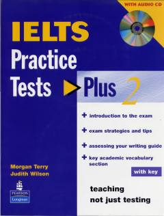

IPIELTS imtihoniga tayyorlanish uchun amaliy testlar va samarali strategiyalar to'plami.
Ushbu kitob IELTS imtihoniga tayyorlanayotgan talabalar uchun mo'ljallangan amaliy testlar to'plamidir. Unda imtihon strategiyalari, maslahatlar va akademik lug'at boyligini oshirish uchun maxsus bo'limlar mavjud.